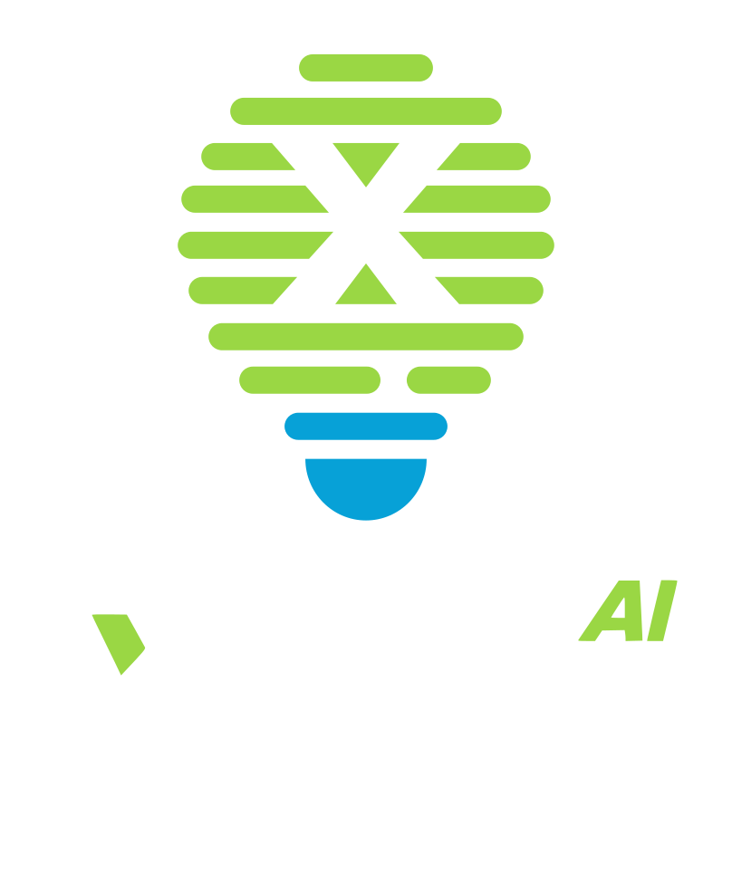
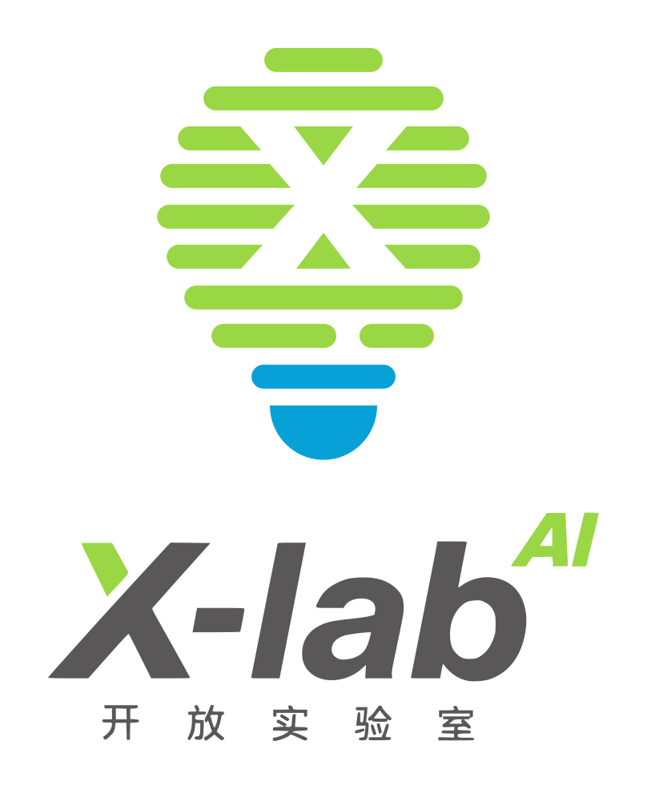
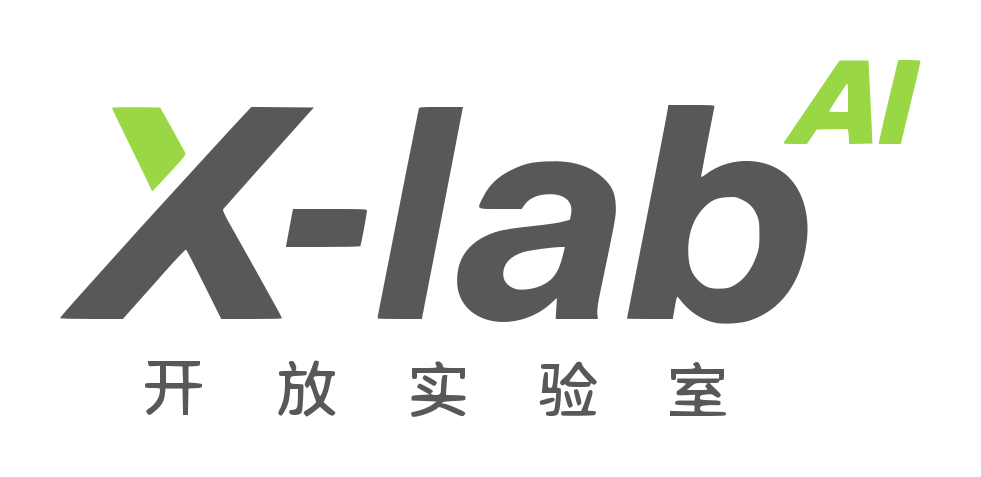
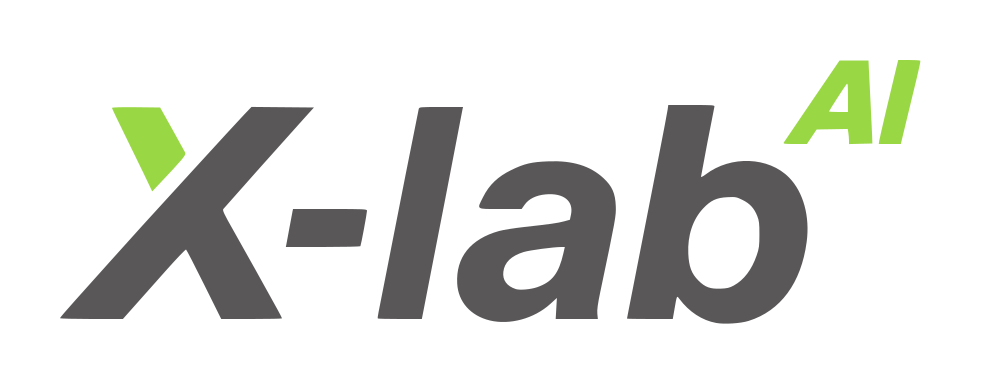

提出更好的问题
澄清目标与边界，让模糊的想法逐渐清晰。

一个新的指数，一段新的探索。
AI, the exponent of cognitive growth.
以开放连接智慧，以 AI 拓展认知。
从一个问题出发，让理解、创造与行动拥有新的可能。

X-lab 是持续探索的主体，AI 是拓展认知与行动可能性的助力。
我们将 AI 放在 X-lab 的右上角，以数学“指数”的视觉表达，寄托对人机协同的期待：帮助我们提出更好的问题、建立更丰富的连接，并在证据与实践中形成判断。
澄清目标与边界，让模糊的想法逐渐清晰。
让技术、产业、教育与社会经验相互启发。
追问依据，理解不确定性，让行动带来反馈。
5 种结构 × 4 种配色，共 20 个正式配置。





彩色、纯黑与反白版本均包含在资源包中。使用时请保持原始比例、品牌色和 AI 上标位置。
Potential, amplified.
分享使用体验、提出改进建议，让品牌表达在共同实践中持续完善。